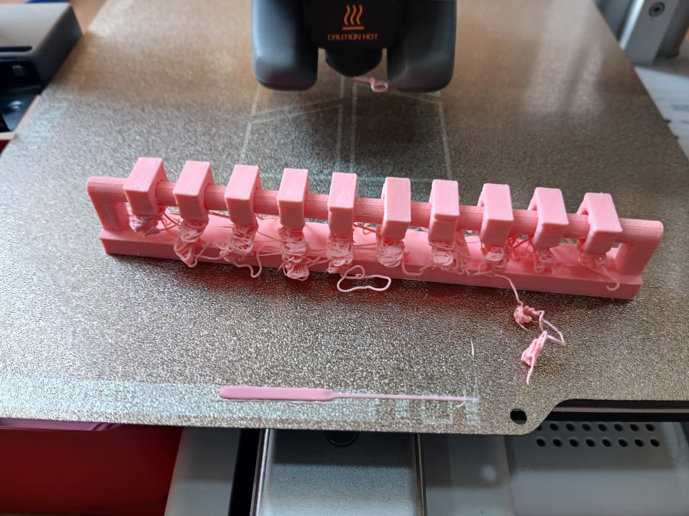
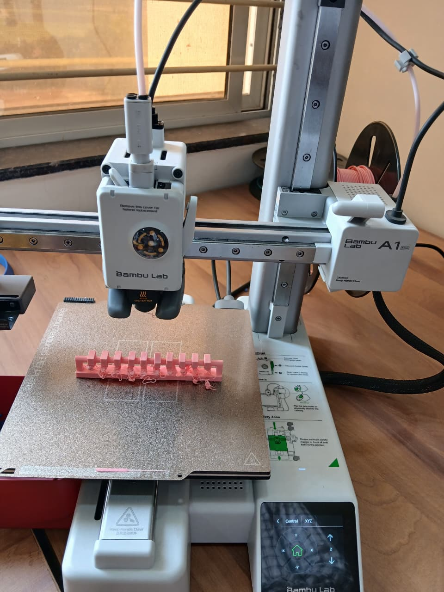
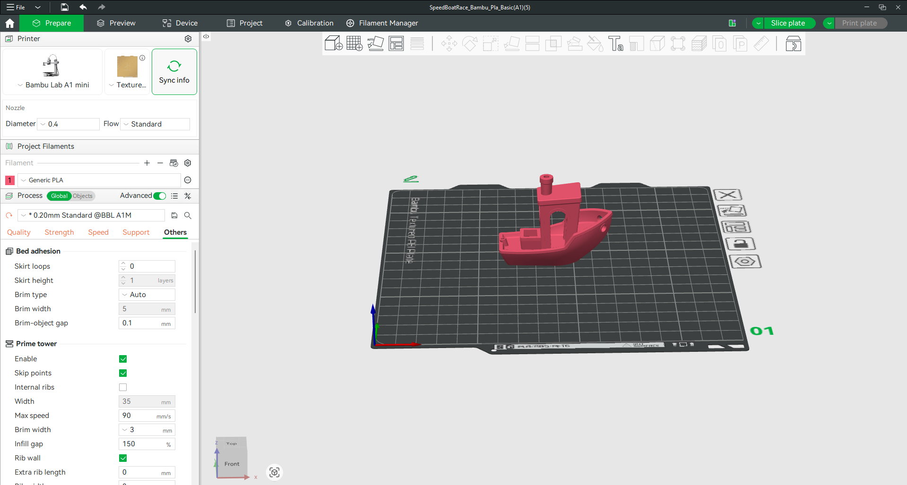
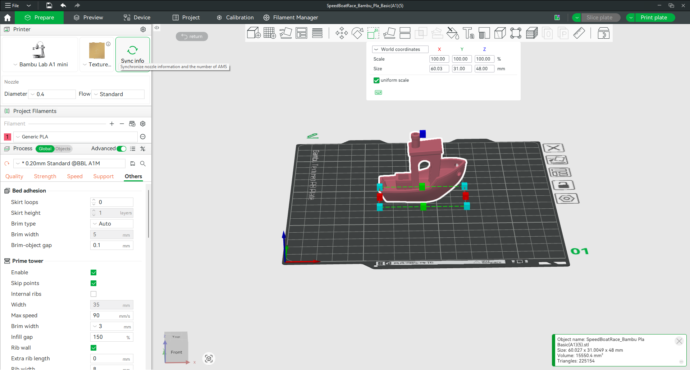
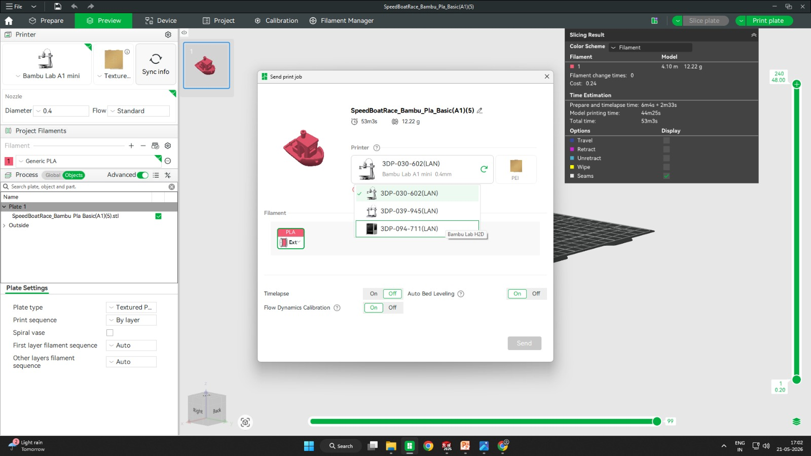
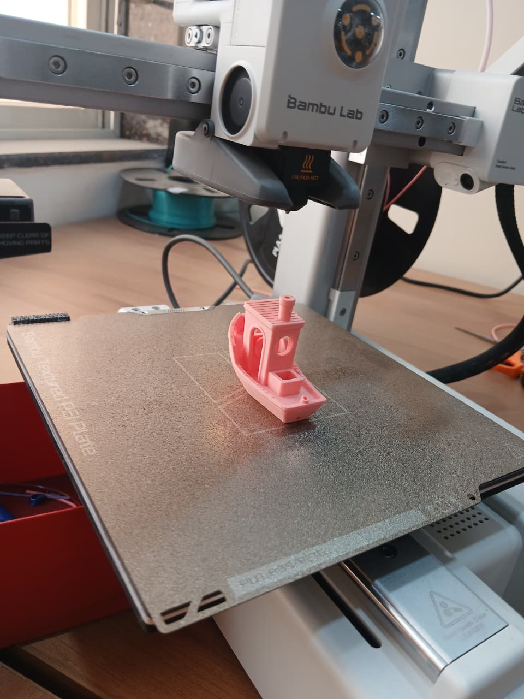
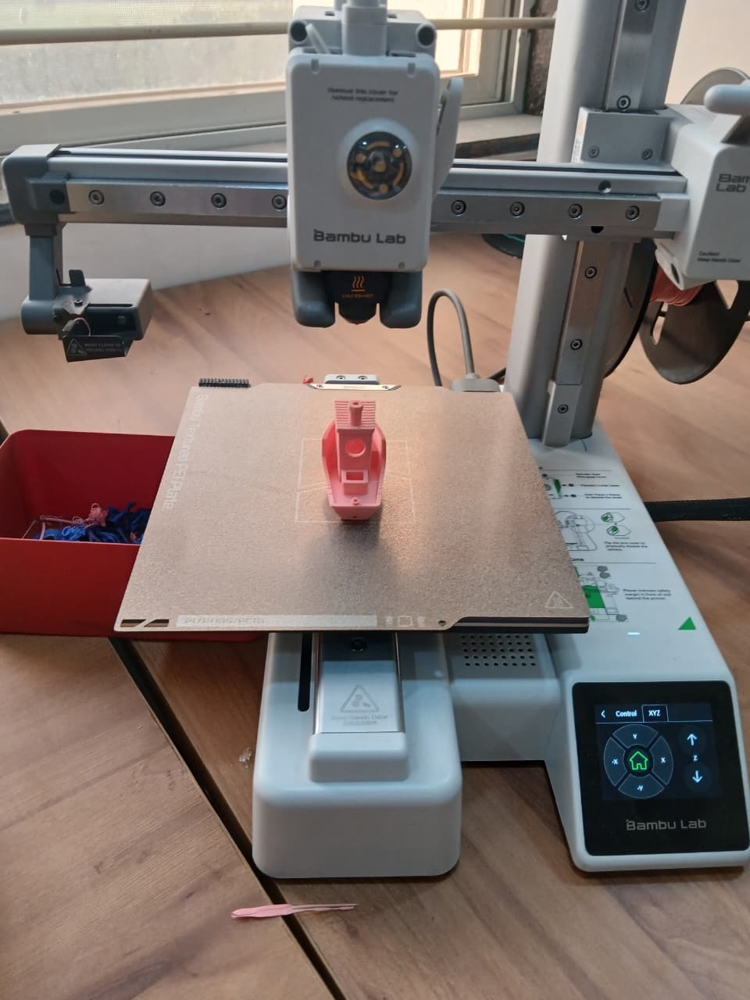
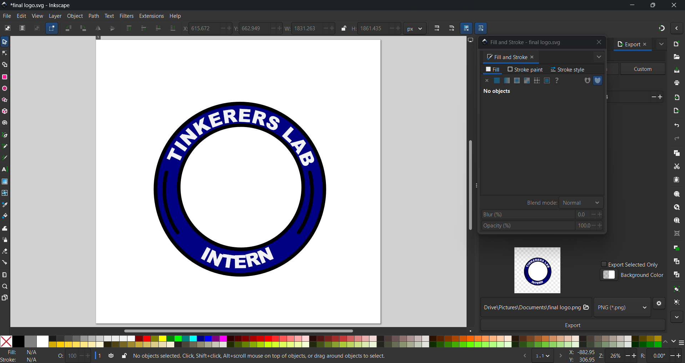
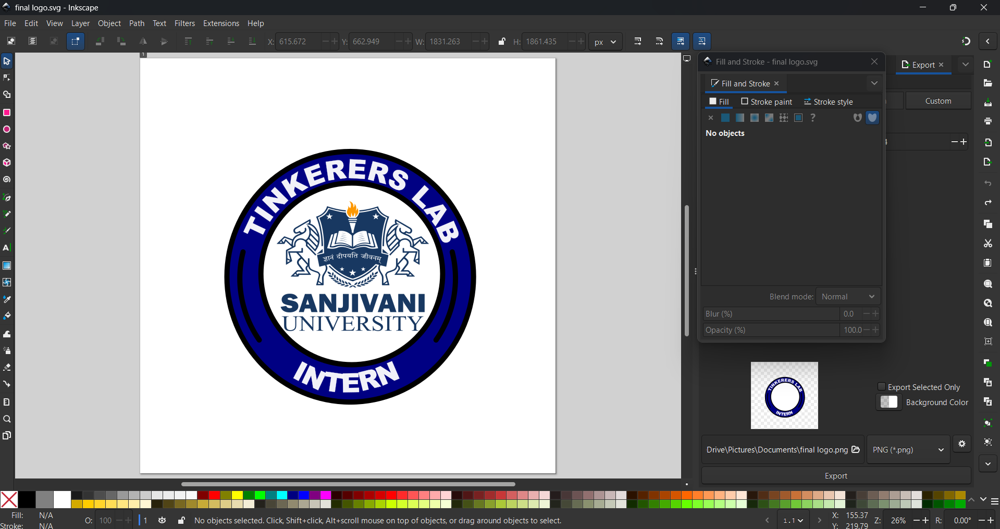
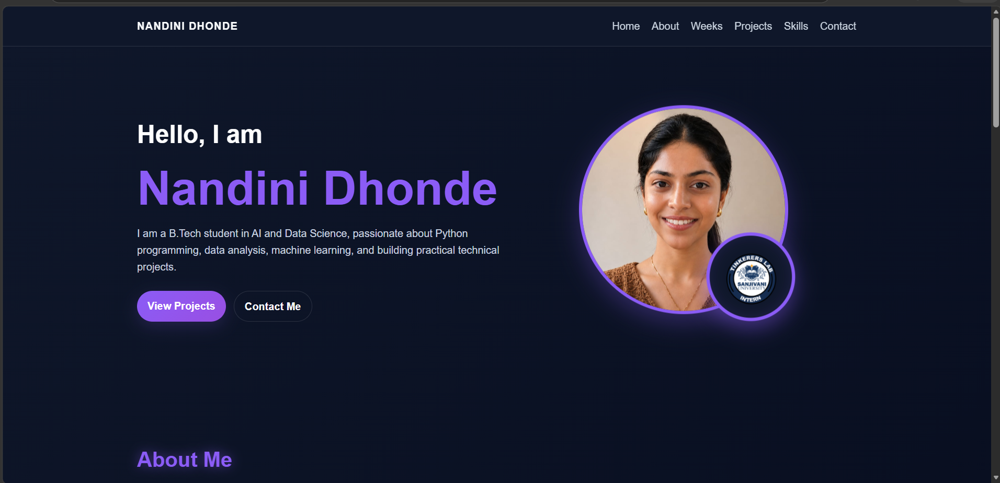

Week 1 - Day 4
← Back to Portfolio
Internship Report – Day 4
Objective
To review manufacturing processes, understand 3D printing workflows and constraints, perform calibration runs, and create a logo using Inkscape.
Common 3D Printing Filaments
- PLA (Polylactic Acid) – Easy to print, biodegradable, beginner-friendly.
- ABS (Acrylonitrile Butadiene Styrene) – Stronger and heat resistant but requires ventilation.
Step 1: Review Manufacturing Processes
- Subtractive: milling, turning, grinding
- Formative: molding, casting
- Additive: 3D printing
Step 2: Compile Machine Axis Conventions
- X/Y = horizontal plane
- Z = vertical motion
- A/B/C = rotational axes
- Lathe: Z = feed, spindle rotation = C axis
Step 3: Set Up Slicing Software
- Imported CAD model
- Selected filament type and color
- Configured layer height, infill, and supports
Step 4: Perform Calibration Runs
- Tested tolerances from 0.1 mm to 3 mm
- Adjusted slicer settings
- Documented calibration curves
Step 5: Report Material Limitations
- ABS requires enclosed chamber
- Printable thickness: 0.1 mm – 3 mm
- Overhangs greater than 45° need supports
Overhanging Print Experiment
- Designed test model with overhangs
- Observed support requirements
- Verified calibration tolerances within 0.2 mm
- Unsupported overhangs sagged
Design for Manufacturing (DfM)
- Follow ISO standard dimensions
- Minimize overhang angles
- Account for shrinkage and deformation
- Validate geometry before printing


Calibration Boat Experiment
We printed a calibration boat (benchy) to evaluate printer performance for overhangs, bridges, surface finish, and dimensional accuracy.
Step 1: Sketch / CAD Model
- Used standard Benchy STL file
- Verified dimensions in CAD software
Step 2: Slicing Setup
- Printer: Bambu Lab A1 Mini
- Nozzle Diameter: 0.4 mm
- Filament: Generic PLA
- Layer Height: 0.20 mm
- Print Time: 53 minutes


Step 3: Printing
- Loaded PLA filament
- Performed bed leveling
- Observed overhangs during printing



Outcome
- Verified printer calibration
- Documented filament usage and print time
- Confirmed printer can handle complex geometries
- Created a logo in Inkscape for branding
Logo Design with Inkscape
Created a professional Tinkerers Lab logo using Inkscape with curved text and emblem graphics.

Adding Shapes and Text
- Created thick blue ring
- Added curved text
- Used bold white capital letters
Adding Logo Elements
- Imported emblem graphics
- Placed Sanjivani emblem inside circle
- Combined graphics into badge design

GitHub Integration
- Edited and exported logo files
- Used Git commands to commit changes
- Pushed updated logo to GitHub
Git Commands Used
git add logo.png logo.svg
git commit -m "Updated Tinkerers Lab Intern logo"
git push origin main

Conclusion
Day 4 combined manufacturing concepts, 3D printing workflows, calibration experiments, logo creation, and GitHub integration. This strengthened both my technical and creative skills while improving my understanding of documentation and version control.
← Back to Portfolio